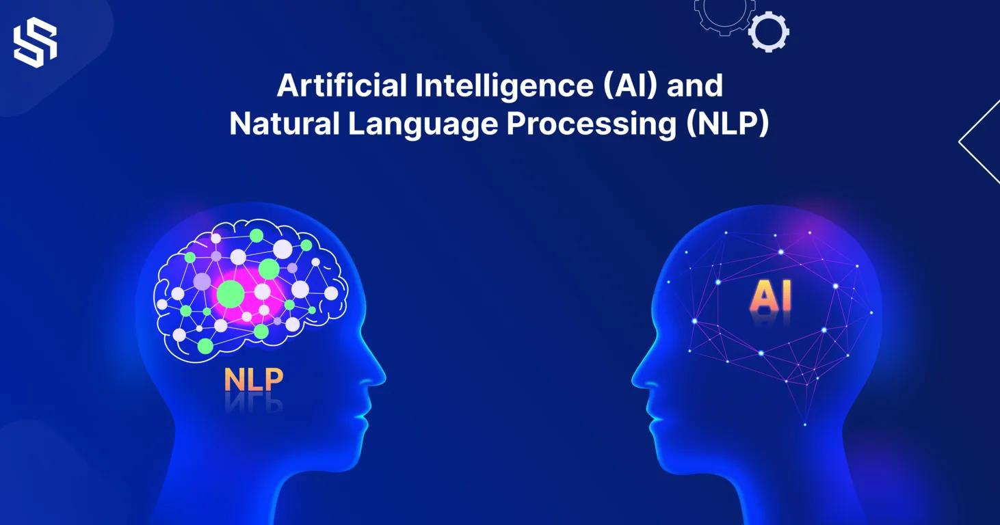
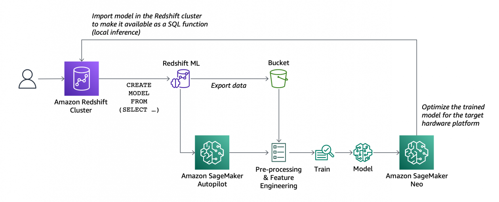

INTELIGENCIA
ARTIFICIAL

La inteligencia artificial (IA) está revolucionando el campo de las bases de datos al permitir el análisis predictivo, el aprendizaje automático y la automatización de tareas complejas. La IA se utiliza para optimizar las consultas de bases de datos, detectar patrones ocultos en grandes volúmenes de datos y mejorar la eficiencia en la toma de decisiones. Al integrar IA en las bases de datos, las organizaciones pueden extraer insights más profundos, prever tendencias futuras y proporcionar soluciones más personalizadas a los usuarios.
BASE DE DATOS AUTOAJUSTABLES
La inteligencia artificial permite que las bases de datos se optimicen automáticamente, ajustando índices, almacenamiento y consultas según los patrones de uso.
Ejemplo: Oracle Autonomous Database utiliza IA para gestionar el rendimiento y la seguridad.
ANALISIS PREDICTIVO

Las bases inteligentes aplican IA para predecir comportamientos urbanos, como picos en el uso de energía o patrones de tráfico. Esto ayuda a planificar mejor los recursos.
Ejemplo: Modelos entrenados con bases de datos de tránsito para predecir congestiones.
PROCESAMIENTO DEL LENGUAJE NATURAL (NLP)

Algunas bases integran NLP para responder preguntas en lenguaje humano, facilitando el acceso a la información sin necesidad de conocimientos técnicos.
Ejemplo: Consultas como: "¿Cuál fue el consumo energético promedio este mes?" pueden resolverse con NLP en bases modernas.
APRENDIZAJE AUTOMATICO EN LA BASE DE DATOS
Bases de datos como Amazon Redshift ML permiten integrar modelos de aprendizaje automático directamente en las consultas para analizar patrones complejos sin salir del sistema de datos.
CAPACIDADES DE GOBERNANZA Y SEGURIDAD INTELIGENTES
La IA se utiliza para monitorizar el acceso a los datos, detectar anomalías y prevenir ciberataques. Esto es fundamental en ciudades inteligentes, donde la privacidad y seguridad de los datos son críticas.
Ejemplo: Sistemas que bloquean accesos no autorizados o envían alertas en tiempo real.
IA PARA LA INTEGRACION DE DATOS HETEROGENEOS
En ciudades inteligentes, los datos provienen de diversas fuentes y formatos. La IA ayuda a integrar estos datos de manera coherente en un solo sistema.
Ejemplo: Uso de algoritmos para unificar datos de sensores IoT con registros históricos almacenados en bases tradicionales.